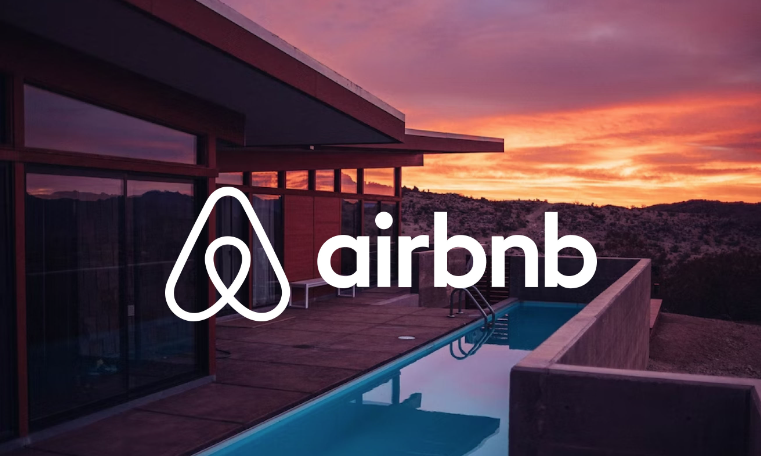

CUSTOMER CHURN
PREDICTION MODEL
I developed a machine learning pipeline to predict customer churn for a fintech product, using an adapted version of the Telco Churn dataset.
The project involved data cleaning, feature engineering, model training (using Logistic Regression and Random Forest), and deployment through a Streamlit web application.
I explored customer behaviour across different segments—such as subscription types and spending patterns—and visualised key churn drivers using Tableau dashboards.
The final model helps identify high-risk users early, offering valuable insights for retention strategy and customer lifecycle optimization.

This SQL project demonstrates my data cleaning skills using a Nashville housing dataset. I standardized date formats, populated missing addresses by matching parcel IDs, and split address fields into separate columns.
I normalized inconsistent 'Y/N' values to 'Yes/No' and removed duplicate records while preserving data integrity.
The project showcases my SQL proficiency in transforming raw data into analysis-ready formats, with clear documentation of each transformation step.
These cleaning techniques are essential for preparing accurate datasets for analysis or machine learning applications.
LEAD SCORING
MACHINE LEARNING MODEL
I built a machine learning pipeline to score and prioritize sales leads based on their likelihood to convert, using a synthetic yet business-relevant dataset.
The project involved exploratory data analysis, feature encoding, model training with Random Forest, and interpretability using SHAP.
I deployed the final model in a Streamlit web app that allows real-time lead scoring, and I also implemented a batch scoring workflow to support campaign-level predictions.
This solution empowers sales teams to focus on high-potential leads and improve conversion rates through data-driven decision-making.
TABLEAU
DATA VISUALISATION
I design visually compelling and insight-rich dashboards using Tableau to transform raw data into clear, actionable stories.
My dashboards span business intelligence, customer insights, and personal passion projects — blending analytical rigor with creative storytelling.
From customer churn analysis to travel wishlists and wine tasting logs, each dashboard is built with a focus on user experience, interactivity, and business value.
These visualizations empower stakeholders to explore trends, uncover hidden patterns, and make data-informed decisions with confidence.